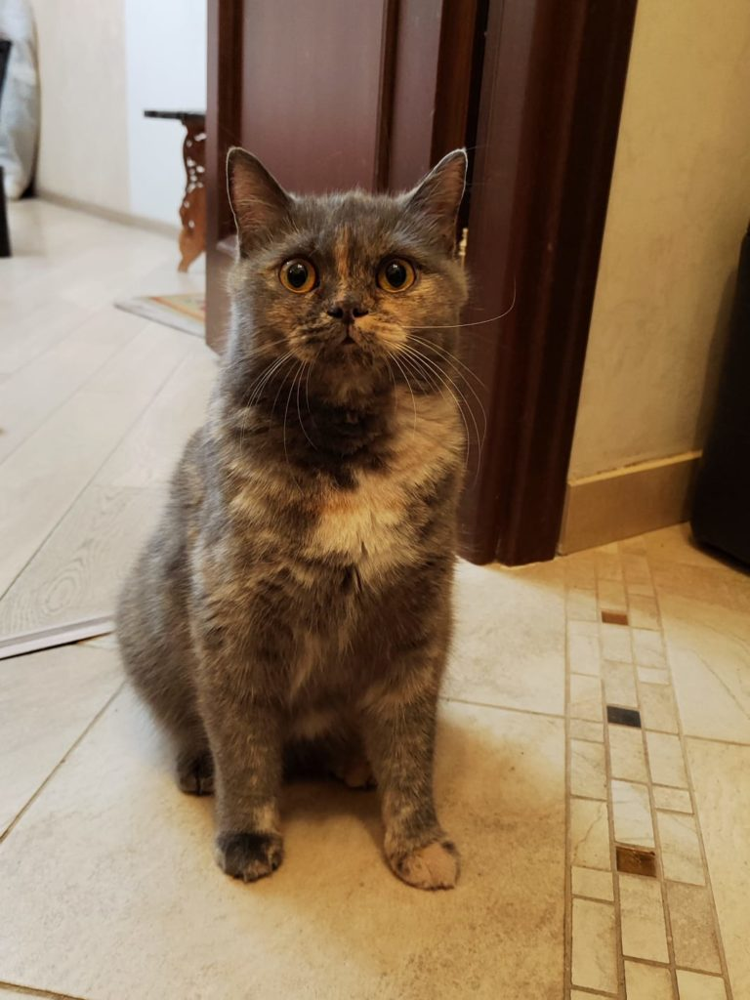
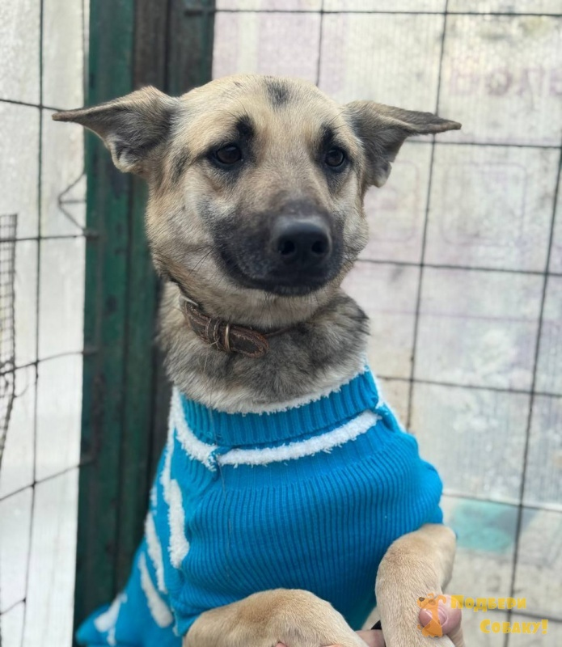

Барсик
Кот, 1.5 годаОчень спокойный и мурчащий котик. Любит сидеть на ручках и спать на мягкой подушке.
Каждый из них мечтает обрести любящий дом и верного друга

Очень спокойный и мурчащий котик. Любит сидеть на ручках и спать на мягкой подушке.

Энергичный, знает команды «сидеть» и «дай лапу». Идеальный компаньон для прогулок.
Маленькая трехцветная кошечка. Принесет в ваш дом удачу, счастье и много веселья.